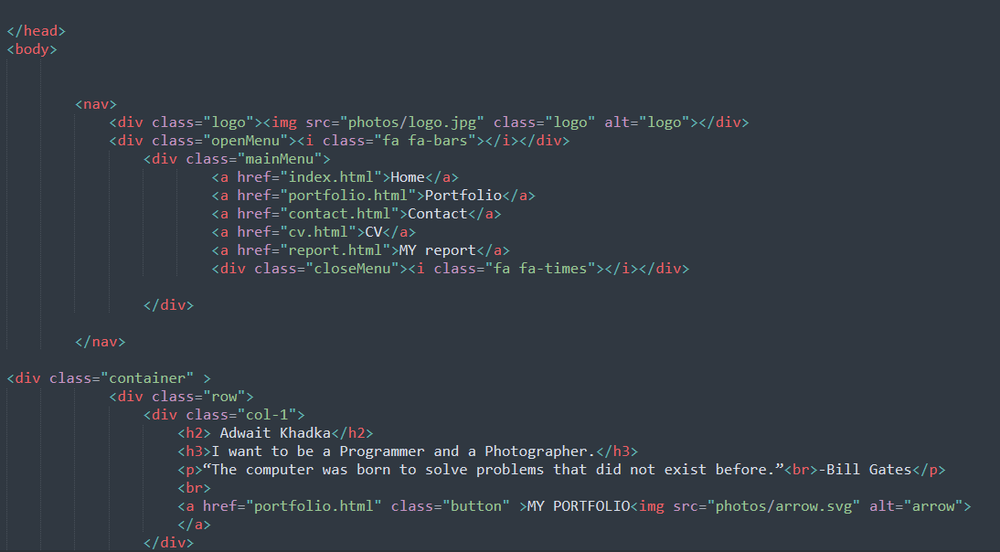
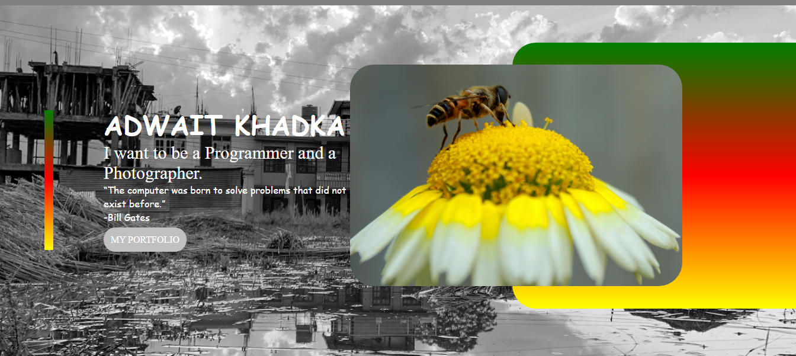
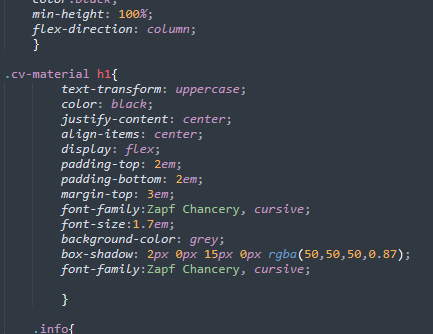

Site report
May 16
I started my work after few days we got it. i was clueless about how i would do it and how I would make my look of the website. I started with the top as most would do. I started to build my index page. I just started randomly and thought of surfing the net for some ideas. I searched and searched but couldnt find any good ideas. I just started it and just went on. I just went on with the flow. I completeted this part very soon but I had difficult time pushing it in github. I had to reintall gitbash in my computer again to make it work.
May 16 to may may 23
I just had some ideas on my page but was still clueless and just tried many ideas. I couldnt find out how to make my page responsive. I clearly disagree with online lectures and tutorial sessions because it makes it very difficult to use the facilities we coulld have used in the college. But due to the pandemic, we are stuck at home with limited ideas and resources and it is very difficult to gain the required. This days was like add and remove for me as it can be seen in the graph I have presented below.

may 23 to may 30
On this day I just went for it. I went on for hours searching ideas surfing the internet and I got some inspiration. I love to click photos and part of me says that i want to become a professional photographer. I had the idea that i would use my photos in my website to show that my photos as well it is a good idea as well because i dont have to search for the content i want to use in the pages.As seen in the screenshot below, I have used my own clicked picture for the background image as well in the image box also i have added my own clicked picture.
may 30 to june 5
I started to pace up on my work. I couldn't decide what I would use for the background colors and which images would look good in the page. I was having lots of trouble making the page responsive and hamburger icon properly. I searched for proper guidence regarding it and finally started to implement it. We were only taught the introduction part of js and asked to use js to make hamburger icon with it. This made me question the curriculum provided by the university. I don't know for sure if it was because of the pandemic or what, I think we could only learn very limited content due to the communication gap that was created by the lockdown period. As the slides which was provided by the university for us were limited. I think this was the same for the others too. When I saw the assignment that was given to us for this term, I was shocked to see the contents that were present in the assignment as many contents listed in the assignment were not taught to us and was not available in the slides. Due to this reason we had to surf alot and even asked the teacher for extra classes for the assignment.
June 6 and june 7
My main focus was on the theme and the style of the nav bar with the main idea that my page reflected. I nearly completed the theme and all that was left was the content I had prepared to be added and polished. I started to check my work that I had done. I found some minor errors like few tagnames were repeated like font-family and justify-content in the css.
W3 Validation